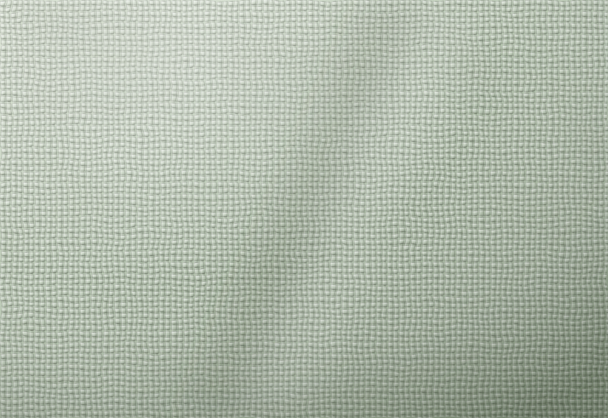
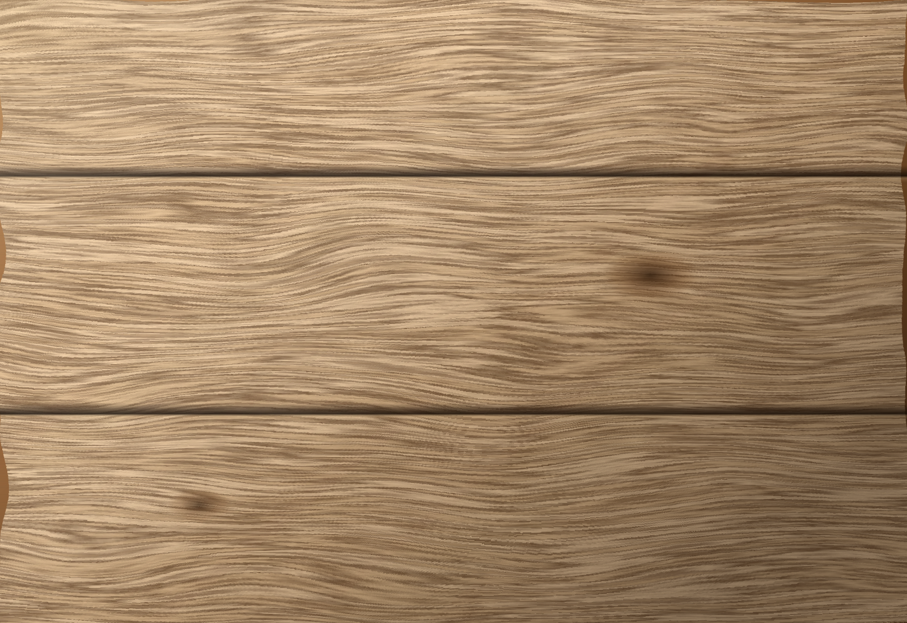
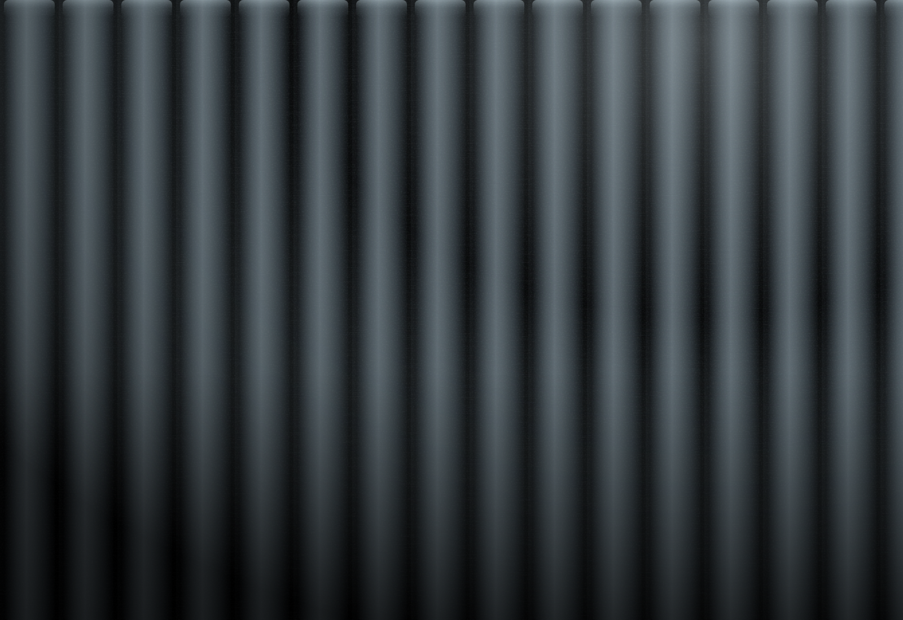
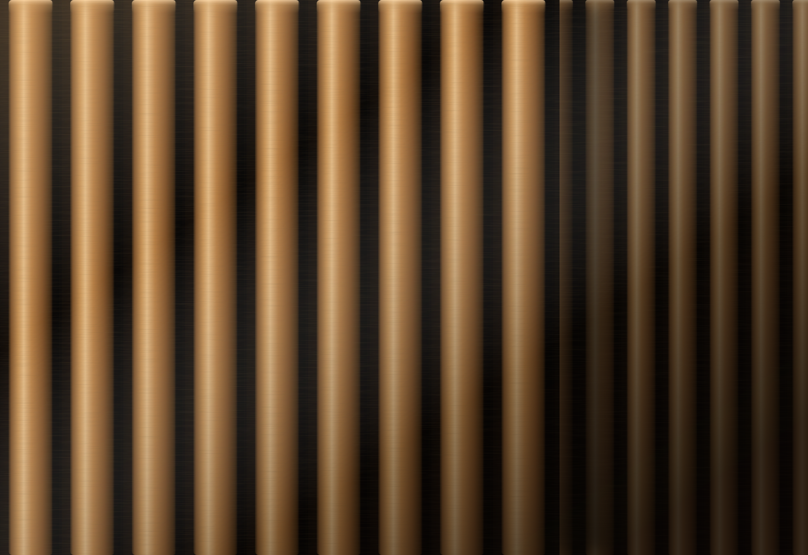
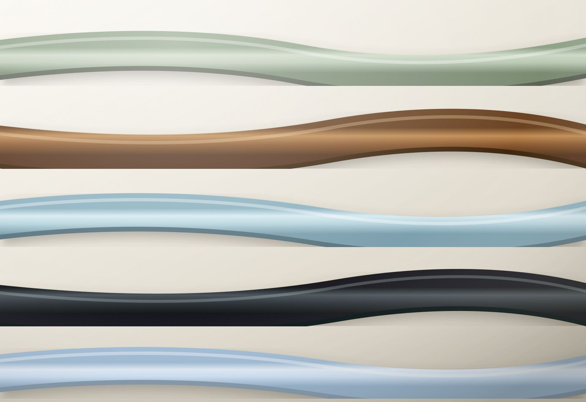
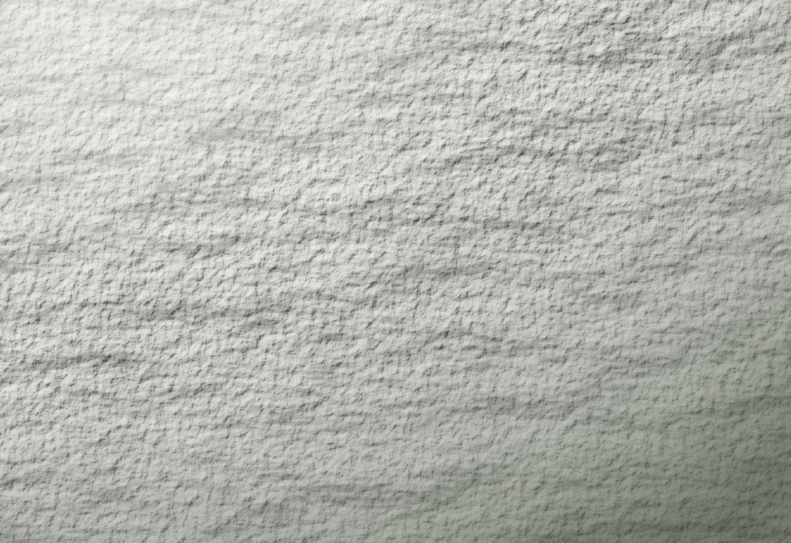

01
Fabric
Woven finishes with a true textile hand — warm, matte and quietly acoustic.
Asiatic Surfaces · Eight Families
Laminates, wooden panels, fluted charcoal and matched edge bands — specified together, so the whole room agrees.
Every surface in this room comes out of one collection —
so the tones agree, and the edges match.
The Collection
Every surface below is made to sit beside the others — tones that agree, edges that match, finishes that age at the same pace.

Woven finishes with a true textile hand — warm, matte and quietly acoustic.

Grain-true woodgrains, from pale oak to deep walnut — dimensionally stable.

Fluted bamboo-charcoal profiles. Deep relief, low sheen, moisture-stable.
Colour-true sheets built for daily wear.
Seamless thermo-formed faces. Satin, fingerprint-forgiving.

Slatted profiles that give a wall rhythm and a room its shadow line.

Exact-match banding for every board we make — so the detail never gives you away.

Micro-relief finishes you notice with your hand first.
And finally
For looking closely. Surfaces reward the people who do — and so do we.